Minecraft server web admin panel
Run your Minecraft server from the browser.
Drop one jar into mods/ or plugins/, and you and your staff get players, chat, bans, inventories, the world map, backups and mod settings in a browser tab. On vanilla it runs next to the server over RCON. Players don't install anything.
- Forge 1.20.1
- NeoForge 1.21.1 · 26.3
- Fabric 1.20.1 · 1.21.1
- Paper 1.21.1 · 26.3
- Vanilla 1.20.1 – 26.3 (via RCON)
- English · Türkçe
Screenshots
A look at some of the pages.
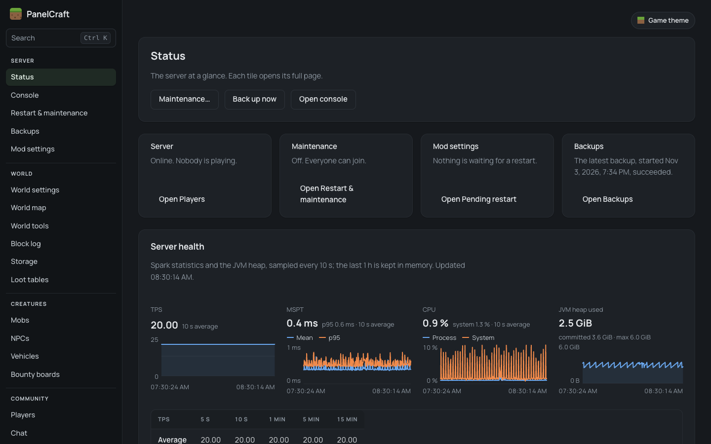
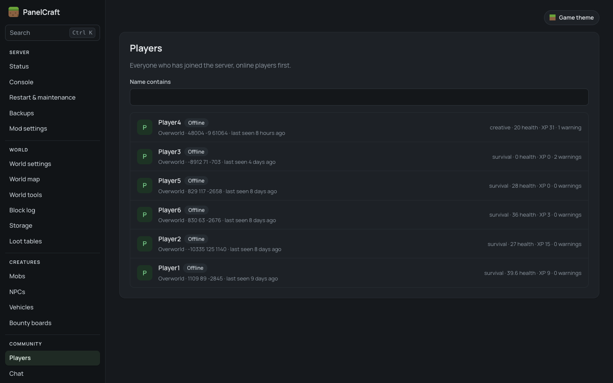
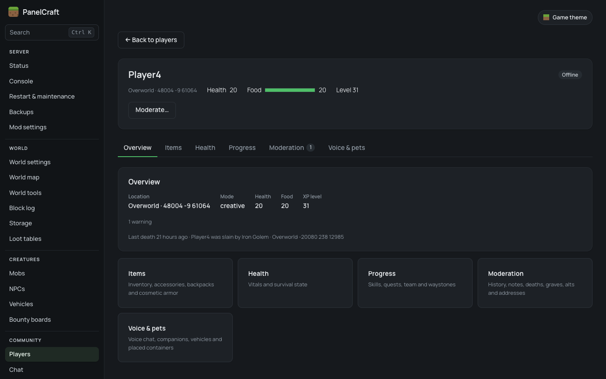
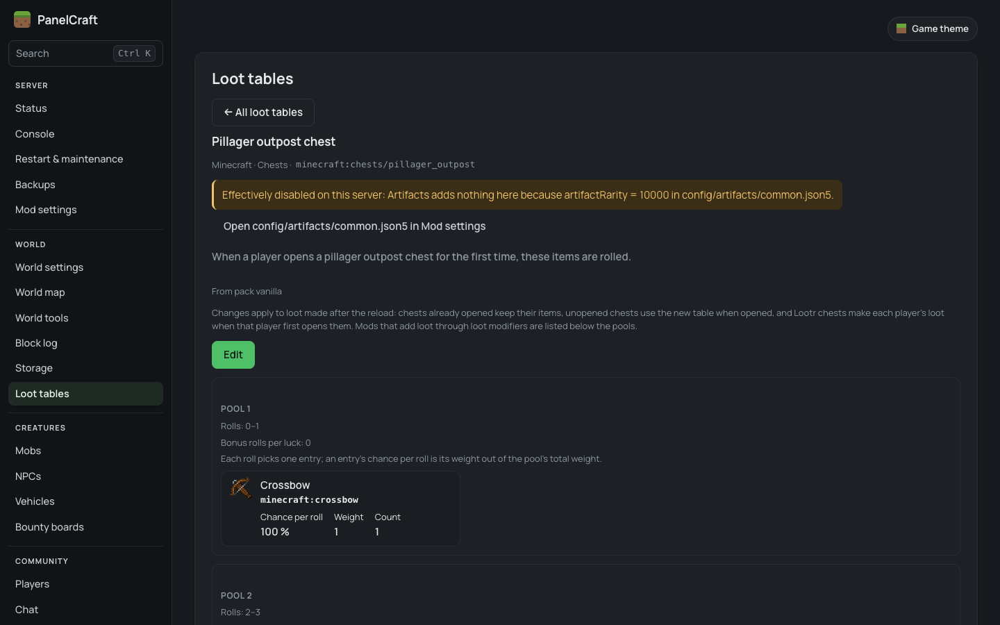
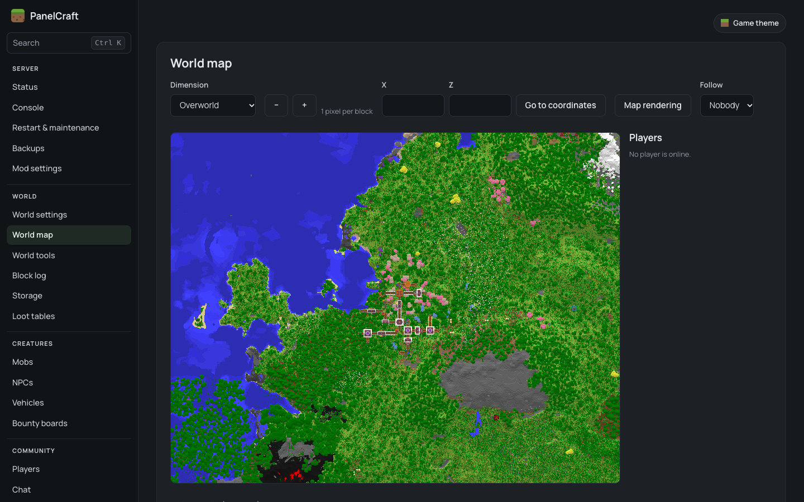
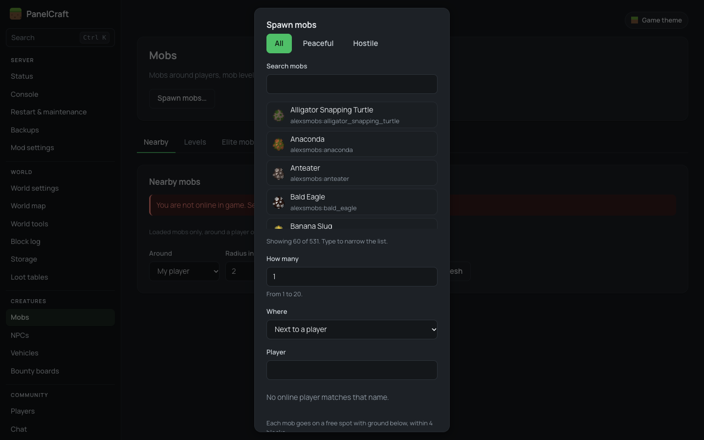
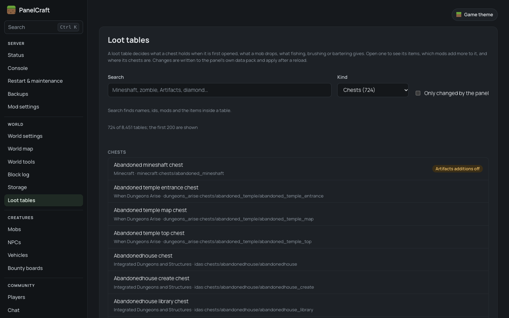
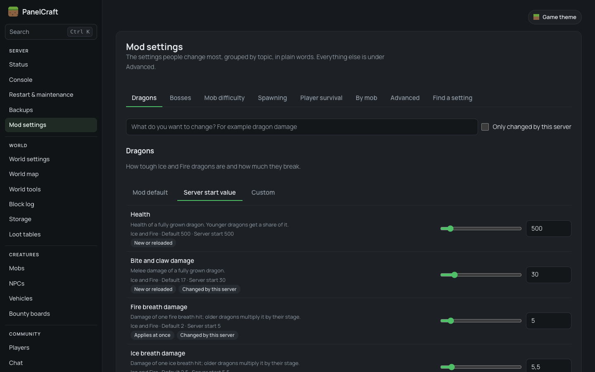
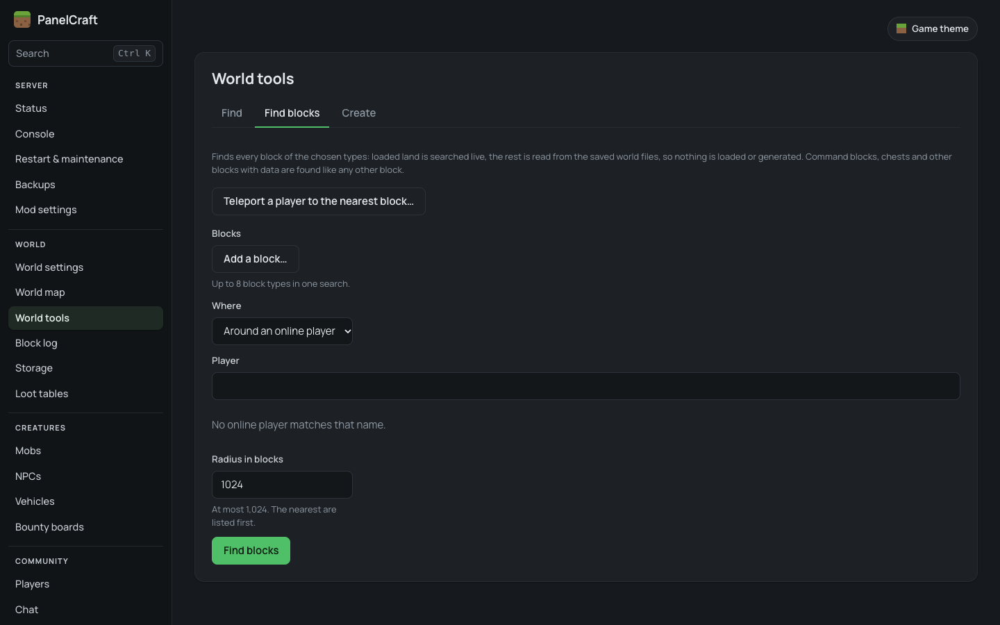
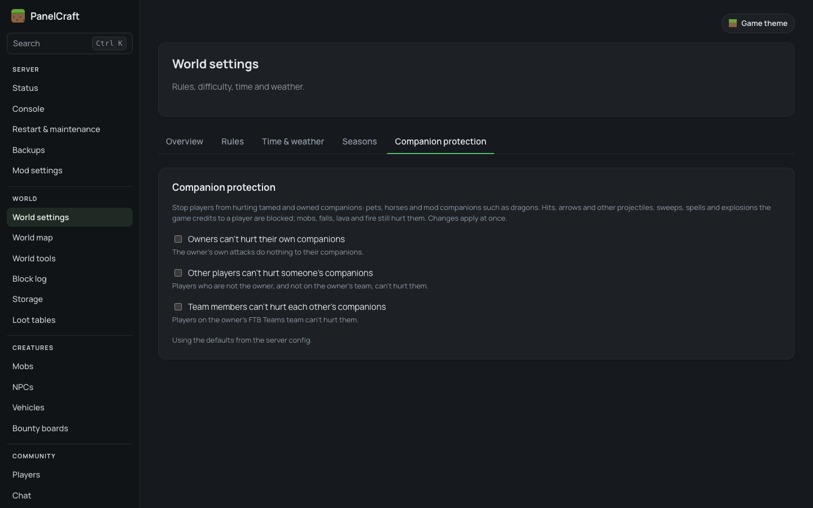
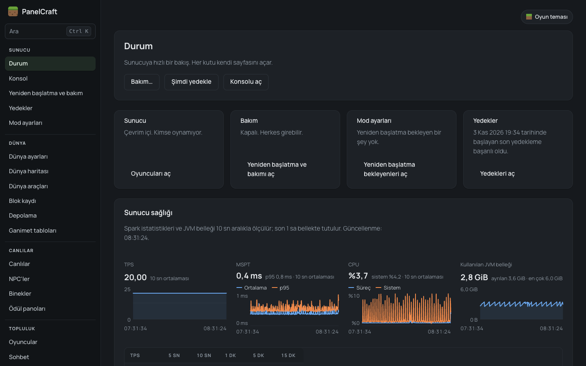
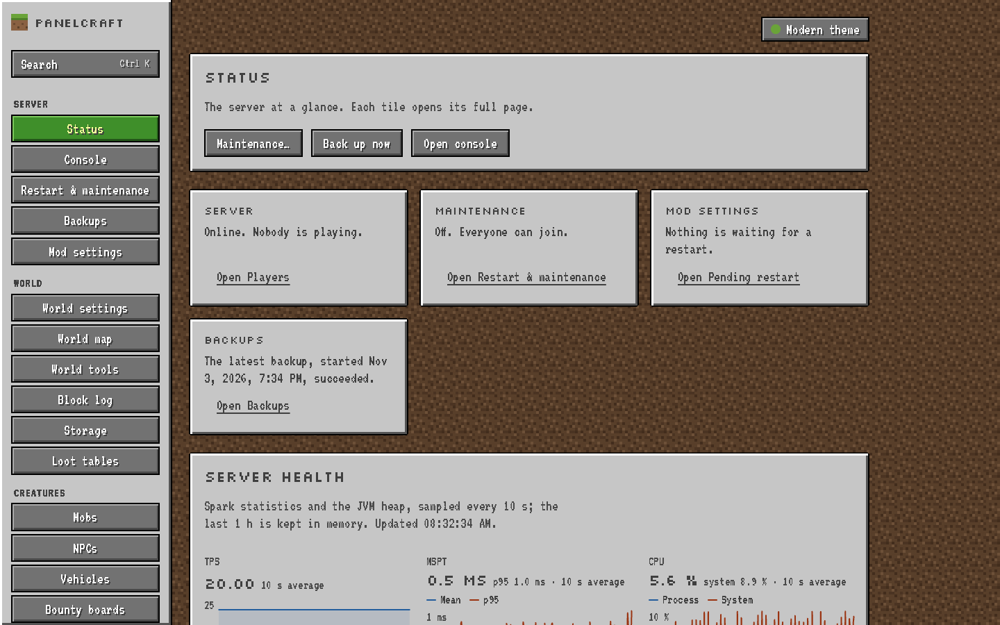
Features
Grouped like the panel's sidebar. What you see depends on your server type and your role.
Server
- Status of the server at a glance
- Console, live, with commands for allowed roles
- Restart with an in-game countdown, and maintenance mode
- Backups of the whole world, download and restore
- Mod settings from the browser
World
- World settings: rules, difficulty, time, weather
- World map with live players
- World tools: find structures, biomes and blocks
- Companion protection for pets
- Block log with rollback
- Storage activity and loot tables
Creatures
- Mobs around a player, and spawning
- Vehicles and ride log
- NPCs and bounty boards with Easy NPC and Bountiful
Community
- Player profiles: inventory, deaths, XP, effects, notes, alts
- Warn, mute, freeze, vanish, kick, temporary and permanent bans
- Chat log and chat filter with escalating sanctions
- Reports from
/reportin game - In-game login for offline-mode servers
Panel
- Roles with ranks and Player / Moderator / Admin templates
- Two-factor sign-in, required for the owner
- Audit log of every action
- English and Turkish, light and dark
Not every feature exists on every server type. Vanilla servers (through RCON) get players, bans, chat, console, world settings, restarts, maintenance and backups. Integrations for more than 30 mods (Curios, FTB Quests, Waystones, Simple Voice Chat, Gravestone and others) exist on Forge 1.20.1 only, and switch on only when the mod is installed. The full comparison is in the guide.
Download
Pick the one file that matches your server from the latest release.
| Your server | Minecraft | File | Goes in |
|---|---|---|---|
| Forge | 1.20.1 | panelcraft-forge-1.20.1-0.1.0.jar | mods/ |
| NeoForge | 1.21.1 | panelcraft-neoforge-1.21.1-0.1.0.jar | mods/ |
| NeoForge | 26.3 | panelcraft-neoforge-26.3-0.1.0.jar | mods/ |
| Fabric (+ Fabric API) | 1.20.1 | panelcraft-fabric-1.20.1-0.1.0.jar | mods/ |
| Fabric (+ Fabric API) | 1.21.1 | panelcraft-fabric-1.21.1-0.1.0.jar | mods/ |
| Paper | 1.21.1 | panelcraft-paper-1.21.1-0.1.0.jar | plugins/ |
| Paper | 26.3 | panelcraft-paper-26.3-0.1.0.jar | plugins/ |
| Vanilla | 1.20.1 – 26.3 | panelcraft-standalone-0.1.0.jar | its own folder |
Three steps
The installation guide explains every step, including PufferPanel, Pterodactyl and HTTPS.
- Put the file in
mods/orplugins/and start the server. The console saysPanelCraft listening on port 8150. - Open the one-time code file,
config/panelcraft/one-time-code.txt(Paper:plugins/PanelCraft/). - Open the panel in your browser, enter the code and your Minecraft name, and turn on two-factor sign-in.
Frequently asked questions
Short answers. The guide has the details.
Is PanelCraft free?
Yes. You can download PanelCraft free of charge and run it on any number of Minecraft servers you own, operate or administer, including servers that earn money through donations, ranks or paid access.
Is PanelCraft open source?
No. PanelCraft is proprietary freeware: free to use, but the source code is not published. The licence does not allow modifying it, decompiling it for redistribution, reselling it or re-uploading the files outside the official release page. The open-source libraries bundled inside keep their own licences.
Which Minecraft servers and versions does PanelCraft support?
Version 0.1.0 has one file for each of Forge 1.20.1, NeoForge 1.21.1, NeoForge 26.3, Fabric 1.20.1, Fabric 1.21.1 (with Fabric API), Paper 1.21.1 and Paper 26.3, plus a standalone program for vanilla servers from 1.20.1 to 26.3, which works over RCON. Each mod and plugin file works only on its exact Minecraft version. Spigot, Bukkit and Folia are not supported.
Does PanelCraft need a separate server or database?
No. As a mod or plugin it runs inside the Minecraft server's own Java process with a built-in database. On vanilla it runs as a separate program on the same machine as the server and talks to it over RCON. Players don't install anything.
Is it safe to open the panel from the internet?
By default the panel only answers on the server machine itself (127.0.0.1, port 8150). Don't expose port 8150 over plain http://. For remote access, put it behind HTTPS with a reverse proxy such as Caddy or nginx, or use an SSH tunnel. Two-factor sign-in is required for the owner and can be required per role, and every panel action is written to an audit log. See Securing the panel.
Does PanelCraft work with modpacks?
You can add it to a modded Forge, NeoForge or Fabric server as one jar in the mods/ folder, as long as it matches the server's exact Minecraft version. On Forge 1.20.1 it has integrations for more than 30 mods, built for the mod set of the Legendary Edition modpack, and each one switches on only when that mod is installed. The licence does not allow including PanelCraft in a modpack you distribute without written permission; install it on the server instead.
Is the panel available in English and Turkish?
Yes. The whole panel is in English and Turkish, and each staff member chooses their own language. Item, block and mob names come from the game's and the mods' own language files.
How do I report a bug or suggest a feature?
Report bugs in GitHub Issues using the bug report template, and share ideas and questions in GitHub Discussions. Feedback is welcome. Remove passwords, setup codes and IP addresses before you post.